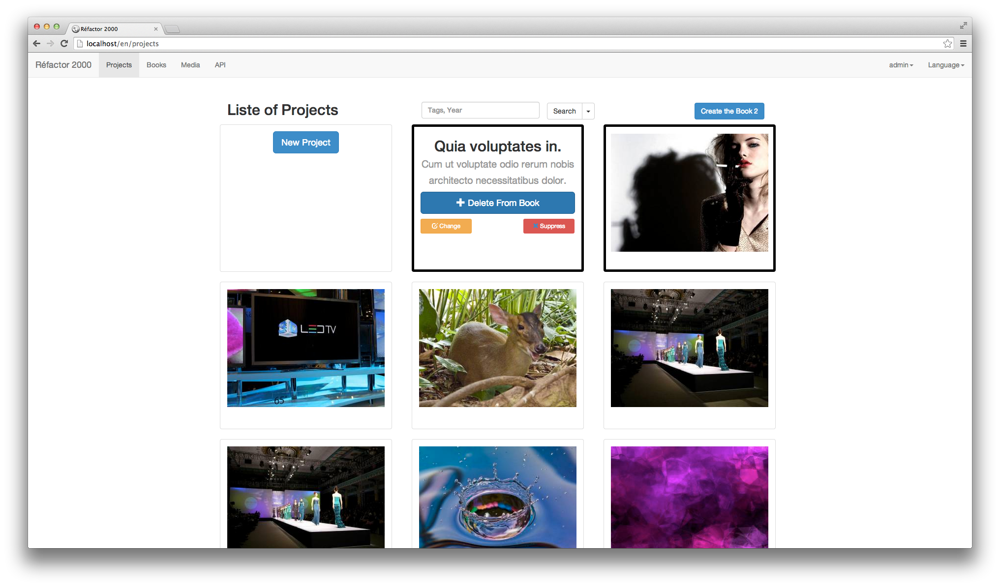
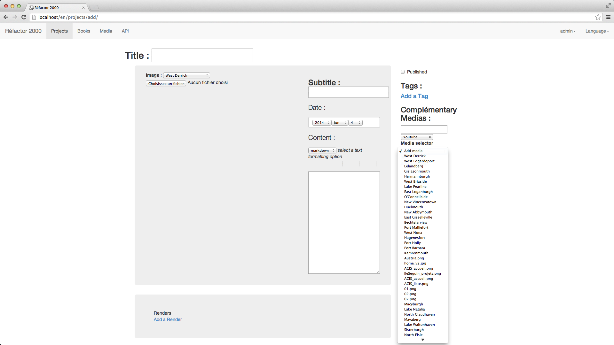
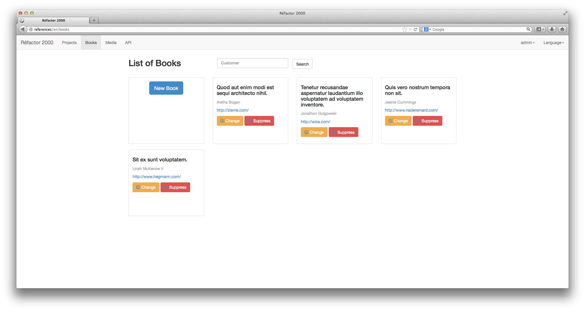
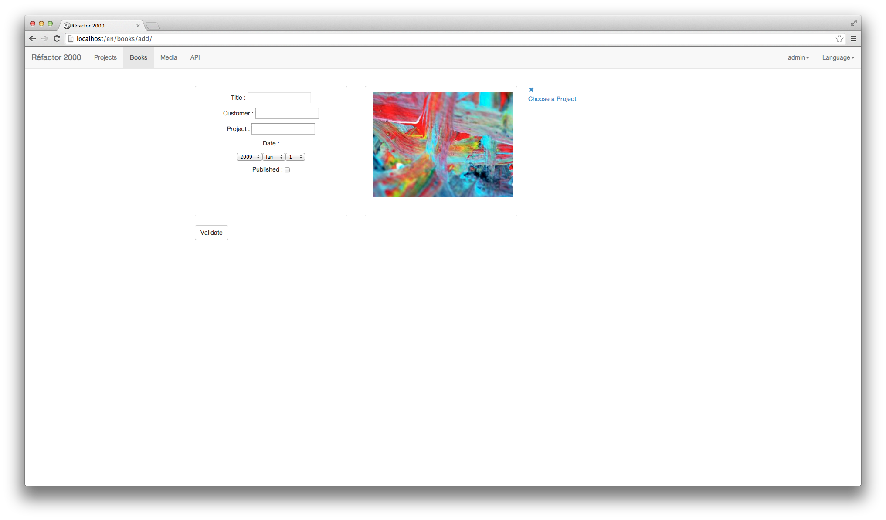
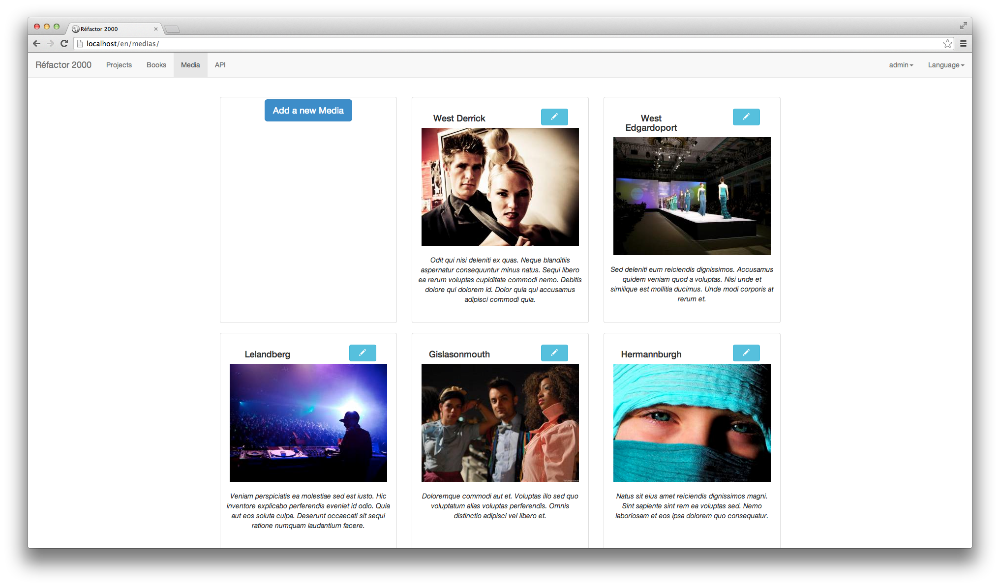
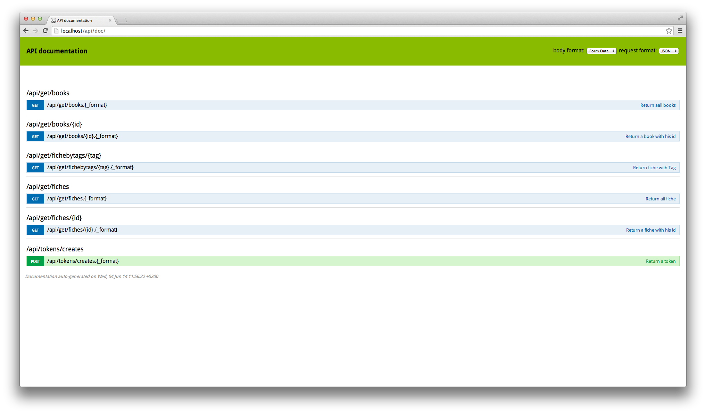

Manage Your References.
Reference Engine is a Symfony2-based project Open Source. It manage your References and your Books and can use an Api to get them or create a pdf to be reagent on offers or simply have a showroom of your work.
For the moment the current project is on dev branch so use this:
$ git clone https://github.com/polypodes/ReferencesEngine.git ReferenceEngine
$ cd ReferenceEngine
$ git checkout dev
Install with our Makefile:
Run composer, then add required assets (assets & upload dirs, files Images etc.):$ make$ make installLet's Start Save your References.
Testing Our ReferenceEngine
The project need an authentification so you need create an admin:
$ php app/console fos:user:create admin tech@lespolypodes.com --super-adminAnd choose Your Password('lol' to match with behat test).
Populate Your Database with Fake Datas from LoremPixel :
$ app/console generate:fakerClean Your Database with :
$ make reinstallBehat test :
Create and customize your test environment variables:
$ mv behat.yml.dist behat.yml
$ [open editor] behat.yml
To check your scenarii syntax:
$ bin/behat --story-syntax --lang frTo check the available Behat tips:
$ bin/behat -dl --lang=frTo test your scenarii:
$ bin/behat --lang=fr "@ApplicationRefactorReferenceBundleUse Api?
For the moment you can just get Book/fiches by id or by tags.
The Api is secure by a Wsse token.to get a token you can use cURL:
$ curl --data "username=admin&password=lol" http://referencesengine:8080/api/tokens/creates.jsonOr run a shell script to get a pretty output:
$ ./generateToken.sh username passwordPreview
Projects :
You will have a list of your projects : You can search in, choose an order, select them to create a project, edit or remove them.
Edit/add project :You can select in your DB or upload a file or choose a youtube vidéo, Select tags, ...
Books :
You will have a list of your books : You can search in, edit or remove them.
Edit/add Book :You can select projects, ...
Medias :
You will have a list of your medias :
Api :
You will have a list of Apis :
Authors and Contributors
Manage by Les Polypodes, developped by @Charlie-Lucas, based on Symfony2 source code available on GitHub.
Support or Contact
Having trouble with ReferenceEngine? Check out the documentation at README.md or contact contact@lespolypodes.com and we’ll help you sort it out.